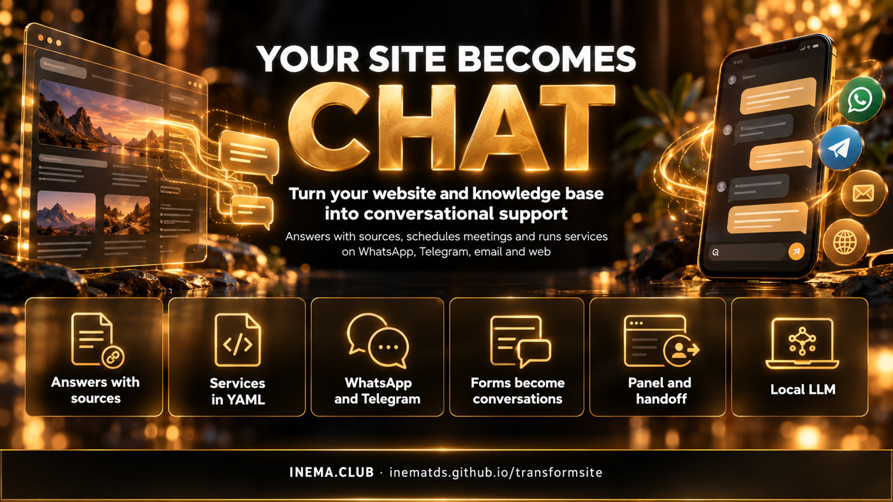

transformsite reads your entire site and knowledge base and puts a conversational agent on WhatsApp, Telegram, email or a widget in place of forms. It answers citing the source, says "I don't know" when it doesn't, and runs services such as scheduling, opening a ticket or sending data to the legacy system.
The site becomes the source of truth; conversation becomes the channel
The idea comes from America.gov (2026), which brought about 29 thousand US government sites into a single conversational entry point. transformsite is the open, simple version of that idea for companies, schools and public agencies.

📚 Answers with sources
The whole site, plus PDFs and documents, becomes a hybrid search index (words + meaning). Each answer carries the link of the page used. Without a source, the bot says "I don't know" and offers to hand over to the team.
🧩 Service = one YAML file
Scheduling, contact us, duplicate copy… You declare the data to collect, the confirmation and the action. The engine handles the conversation: it accepts everything in one sentence, corrections, a question midway, cancelling and resuming days later.
🔒 Local and privacy-ready (LGPD)
LLM on Ollama (or Claude Code / Codex via your subscription), index in a single SQLite file, personal data masked in logs, configurable retention, email code before sensitive data.
How it works
From legacy site to conversational support
Six phases, each with its own command and a measured definition of done.
inventory→ingest→answers with sources→YAML services→channels→convert→dashboard + metrics
F0–F1 · Learn and answer
inventory lists pages and forms. ingest reads the site (sitemap, links, robots.txt) and local documents. The RAG answers only from retrieved chunks and cites the source.
F2–F3 · Services and channels
Slot machine with validated types (CPF, email, phone, postal code, date and time in Portuguese), local calendar, tickets. The same engine serves Telegram, WhatsApp (Evolution or Cloud API), email and widget.
F4–F6 · Legacy, operations, deploy
convert turns an HTML/PDF form into a service that keeps sending data to the old system. Dashboard to take over conversations, approve services and see metrics. Docker and VPS ready.
Prerequisites
What you need
Python 3.11+ and an LLM. With a GPU, the default is a local model; without a GPU, use a smaller model or your subscription.
Chat model + bge-m3 embeddings. Without a GPU: qwen2.5:7b.
ollama pull qwen3.6:35b-a3b
ollama pull bge-m3
Or: your subscription
In transformsite.yaml, use Claude Code or the Codex CLI already logged in, no API key.
# transformsite.yaml
llm:
provider: claude_cli # or codex_cli
User guide · step by step
From zero to a working bot in 7 steps
Real commands, the same ones used in the pilot with the inema.club site.
1
Create the project
Generates the configuration, two example services (scheduling and contact us), an example tool, the test scenarios and a random token for the dashboard.
Reads the entire site and the documents in docs/ (md, pdf), splits them into chunks and computes local embeddings. Re-running only reprocesses pages that changed.
transformsite ingest# inema.club: 386 pages → 1,512 chunks in 249 stransformsite ask"Preciso saber programar para fazer o curso CAIP?"
4
Declare the services (Phase 2)
Edit services/*.yaml: data to collect, confirmation, action and reply. Custom tools go in tools/*.py. Validate before going live.
# services/agendar.yaml (excerpt)
slots:
- {name: nome, type: text, prompt: "Qual é o seu nome?"}
- {name: email, type: email, prompt: "Qual e-mail para o convite?"}
- name: data_hora
type: datetime
options_from: tool:agenda.slots_livres
action: {tool: agenda.criar_evento, idempotency_key: "{session_id}:{data_hora}"}
transformsite validate# 0 error(s)
5
Measure before publishing
Run the test questions and the conversation scripts. golden generates a draft of questions from your own knowledge base for you to review.
transformsite golden --n 50 # draft → review → tests/golden.jsonltransformsite eval --golden tests/golden.jsonl # valid citation, "I don't know", injectiontransformsite eval --scenarios tests/cenarios --real-llm # 12/12 in the pilot
6
Bring up the channels (Phases 3 to 5)
The web widget comes enabled. Telegram, WhatsApp and email turn on with the keys in .env. In the /admin dashboard, an agent takes over a conversation (the bot goes silent) and hands it back when done.
transformsite serve --port 8000
# on your site:
<script src="https://SEU_DOMINIO/widget.js"></script>
# old form → service (born review: pending)transformsite converthttps://www.minhaempresa.com.br/contato
7
Publish on a VPS
One command installs Docker and brings up app + Ollama + Evolution API (WhatsApp) + Caddy with automatic HTTPS.
The inema.club site (courses, guides, events and knowledge base) was the first to become chat. Result measured with 73 test questions and the local LLM: 92.6% of answers with a valid source, 100% "I don't know" on out-of-scope questions, 100% of injection attempts blocked and p95 latency of 2.6 s.
Widget on the site: the answer comes with the page it used as its source./admin dashboard: metrics (resolution without a human, handoff, citation, latency), plus conversations, queue, services and knowledge base.
Roadmap
Where it is going
v1 delivers the six phases. v2 packages everything into a ready-made Docker image.
v1 ✅
Complete frameworkInventory, knowledge base with sources, YAML services, Telegram/WhatsApp/email/web, form converter, dashboard, metrics, VPS deploy.
v2
Bot ready in one imagetransformsite bake: after pulling the whole knowledge base and defining the services, it builds a Docker image with index, services and a delivery manifest. One docker run and it is live.
v3
Transactions and identityLegacy system and gov.br login, attachments and OCR, filled-in PDF, WhatsApp audio with local Whisper.
v4
Scale and multiple clientsPostgres + pgvector, queues, vLLM, multiple bots per installation, continuous evaluation on every new crawl of the site.